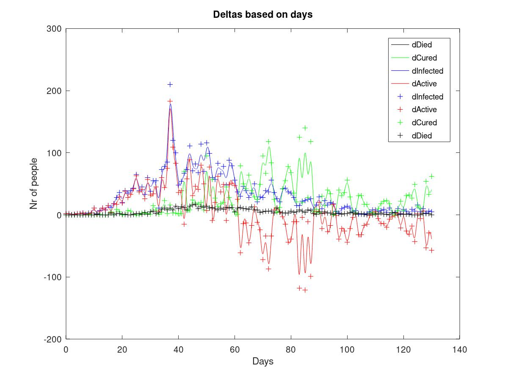
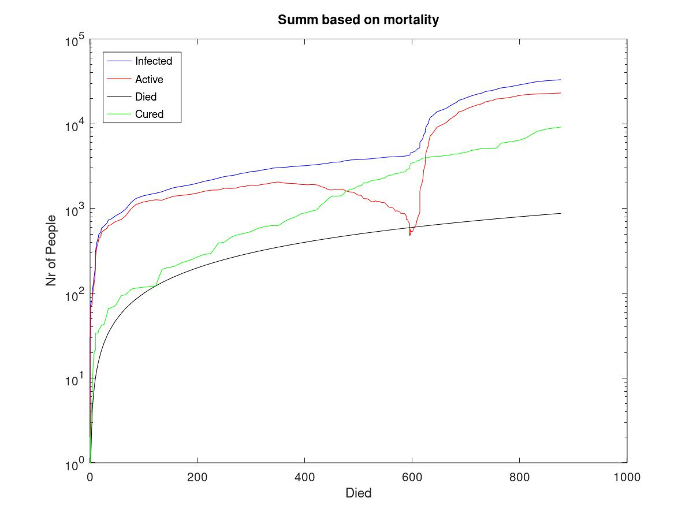
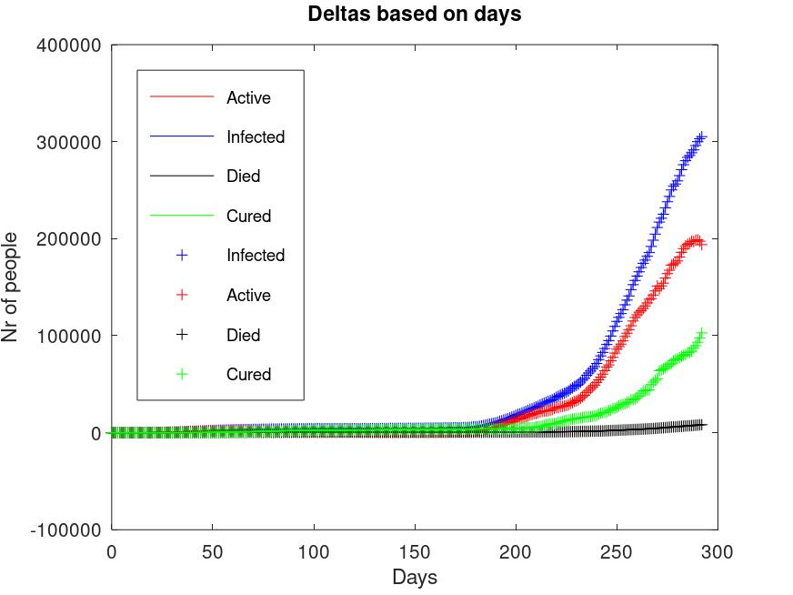
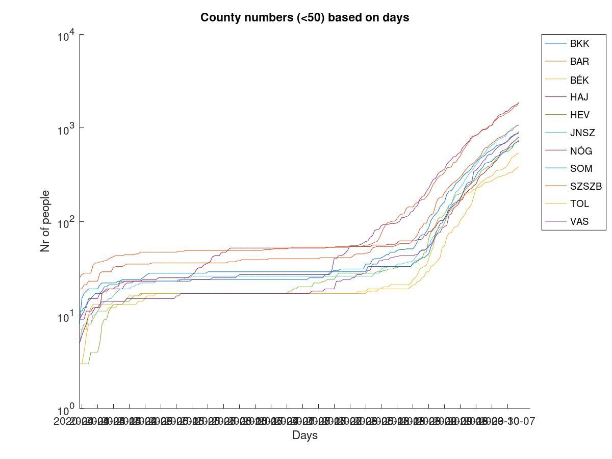
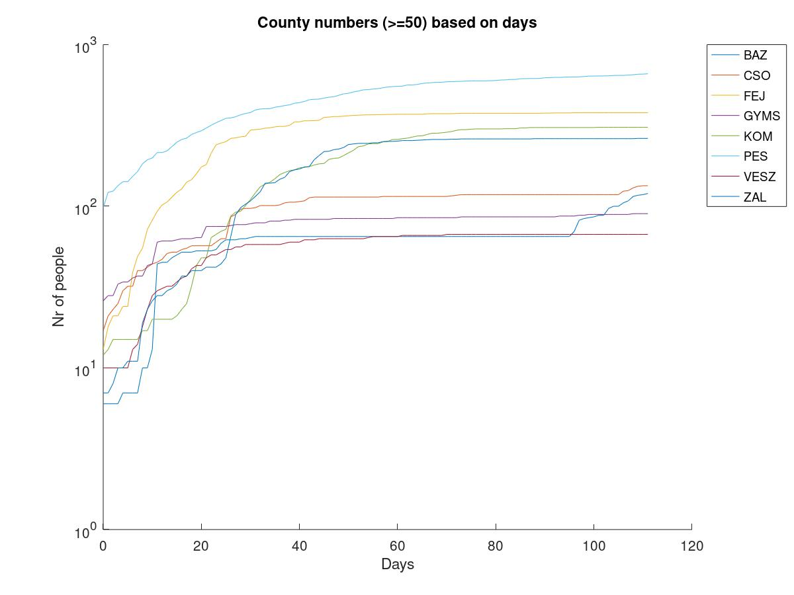
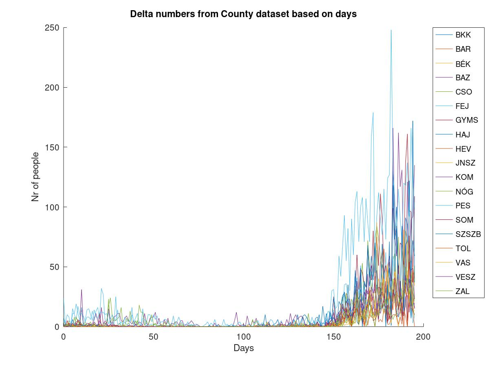
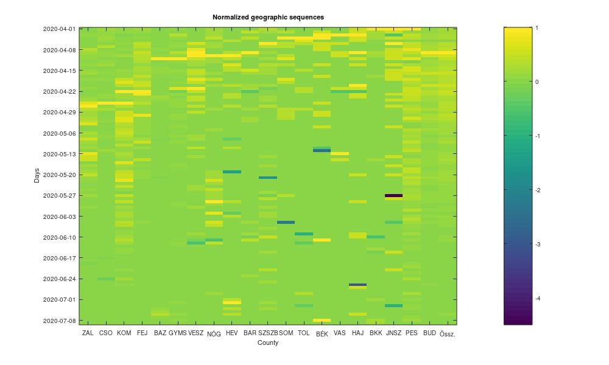

Octave/Matlab Example project
To display hungarian covid19 datas
The aim of this project to help on you learing the Matlab script language quickly.
You can download octave (free) from : https://www.gnu.org/software/octave/download.html
Input data come from this wikipedia link,
updated on 2020-05-09.
Day zero in curves is 2020-03-04 when the first 2 people tested positive to Covid19 in Budapest.
Figure 1:
Delta values are oversampled 24 times to get hourly resolution, interpolated, then fintered to calculate the mean curve.

Figure 2:
The curves are linear interpolated only.

Figure 3:

Day zero on figure 4-6 is 2020-04-01 when the county statistics started to shown on government publications.
Figure 4:
Absolute numbers where max is less than 50.

Figure 5:
Absolute numbers where max is greater than 50.

Figure 6:
Delta numbers where daily change max is greater than 10.

Figure 7:
The normalized deltas on all the counties.

Matlab/Octave sources:
Source 1:
covid.m
Source 2:
megye.m
The script repository is on http:// GitHub.com / bfarago / hu_covid_datas, in case of you wana collaborate to fix or develop it.